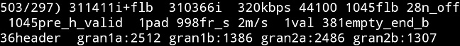
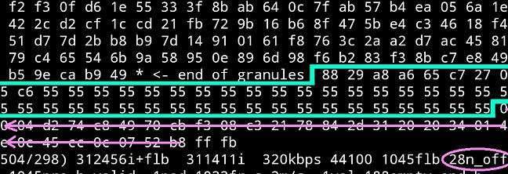
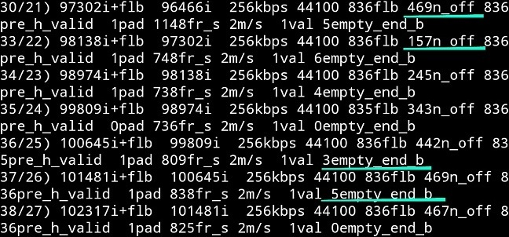
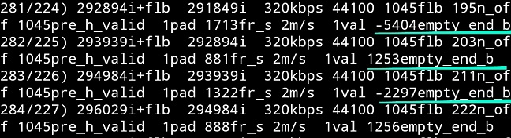

Executive for Windows, Executive for Linux, Source code.
To compile on linux:
g++ -o 96cutfixed 96cutfixed.cpp -funsigned-char
Dont know why but on the first run I got segmentation fault in a place where program should be creating new file(ofstream). After running: ls -l problem disappears.
If you are compiling on Windows remember to add unsigned char flag to compiler options: -funsigned-char
Source code also works on Android Cxxdroid app.
Folder with all:
https://drive.google.com/folderview?id=1py_4hUFxeNF2HuGWFWmNVFpoLtm548Vy
Report bugs(add buggy mp3 + same name .txt file with description):
https://drive.google.com/folderview?id=1Wg_sGTf-3wGS-7eu0Ap8n33x5wL2jov-
Forum:
https://forum.speakerplans.com/mp3-cleaner-extractor-encoder-comparator_topic103812.htm
Information about Mp3 Structure:
mp3_theory.pdf
10.1.1.557.4662.pdf
Watch out for "spelling" mistakes. One is at the channel mode.

First are 2 numbers-indexes. First number is the index of frame after initial sorting. Second one is the index number of the frame after all sorting was done taking into account correlation between frames.
i - is the index of Byte in opened file where header is located. If you open mp3 file in hex edit -> Search -> Goto (dec) and write i, you will find this header.
flb is confusingly used as frame length in Bytes but ... such thing doesnt exists... so it is distance in Bytes to next header which is calculated from sampling rate, bitrate and mpeg/layer used. Naturally if i+flb is equal to i of the next frame is the basis criterion of frame validity.
bitrate, sampling rate, flb
negative offset - from header to first Byte of data. This is where the frame really starts.
pre_h_valid - distance to previous hvalid header. It is for my debugging. If you find here unexpectedly high value it will be interesting subject for analysis. You can always drop me file to: Debug.
pad - is the padding
fr_s - frame size - its real size from decoder point of view. So entire coding data + header rounded to full Byte
m/s - mono/stereo
val - if frame was considered valid by algorithms
empty_end_b - bits after the fame data ends that are unused before next frame cames.

When you dig into menu and activate Show frame data: Every 1 mp3 frame has 1 header with side info(optionally crc check*). And in each frame there are 2 granules if it is a mono frame and 4 granules for stereo frame. With Show frame data on(in mpeg layer 3 frame consists 1152 samples so 1152/2 samples per granule) you can see after frame param info, info about granules. Length of each granule in bits. Following is hex data of the frame divided into granules and (header+side info). Now if you look where the frame data ends it will tell you how much unused space is left to following frame. This would be first school criterion for comparing encoders. There are different encoders. Some use oversized bitrate and leave empty space after data ends. Better use negative offset value of next frame to compensate for this. Many use various bitrate which changes calculated distance between frame headers. VBR is already implemented. There is one more thing called Free bitrate. This option currently doesnt work but files encoded this way are very unpopular. 1% would be overestimation.
*In reality crc check only tells if entire data in a frame was corrupted or not. I skipped crc check. It is implemented in algorithms based on lengths but I havent calculated the crc itself. All in all it only tells info to decoder if frame should be played or if previous/following frame should be played instead. Moreover it is really unpopular to do crc checks in mp3 frames.
In menu you can also specify which frames to show.
There are also statistics of fake frames and valid ones.

21. Gareth Emery - Tokyo.mp3


Large empty_end_bits. A lot of empty space at the end of the frame. You can see constant oversized bitrate comparing to amount of data. Encoder practicly didnt operate n_offset value either. Its 320kbps value is overestimated.
20 - Kat Krazy feat. elkka - Siren (Armin van Buuren Remix).mp3

Nicely operating n_offset value. Its frames data starts next byte just after preceding frame finishes. True 256kbps.
David Guetta & Showtek feat. Vassy vs. Dj Rich-Art - Bad Rocking (Rich-Mond Mash-Up)(2014)  This one is still a mystery for me. It seems to have much bigger real bitrate. If you look carefully at the frames the negative empty_end_bits tells that frame data exists within multiple consecutive frames. So same data is used to code twice(multiple frames). It doesnt mean the quality grows as the bitrate. One frame makes restrictions for the other but nevertheless amazing. I was trying to write algorithm to separate frames... but unfortunately it is impossible. Maximum bitrate of 320kbps gives restriction on flb size. Maybe with free bitrate(0b0000) but this is also problematic for a players. David Guetta & Showtek :) check 0xea10 if you fancy :)
Frame functions:
display(source) - Displays the whole frame dividing it on separate granules and header. Watch out with the calibration. I havent precisely check it so it may be 1 byte off.
move_data(source, header_distance, move_frame) moves frame in the source. And moves its header relatively to data. header_distance - this is the new negative offset value. (source, 15, 0) will move frame header to position 15 bytes from start of the frame. (source, 0, -10) should move entire frame 10 bytes earlier. As the frame was moved it naturally sets up its new i_point, s_i pointer, n_offset and writes new n_offset into frames side info.
Another functions: repack_frames - it was supposed to be function handling move_data(...) so the frames would be align more efficiently in bad encoders. It wasnt finished. Currently it writes 0x00 bytes where data ends.
Sometimes program treats fake frame at the beginning inside id tags as valid so it copies id tags or its part. Example: Matstubs - War (Bass Boosted). In this case players are likely to show fake information about song time.
Wrong total frames time.